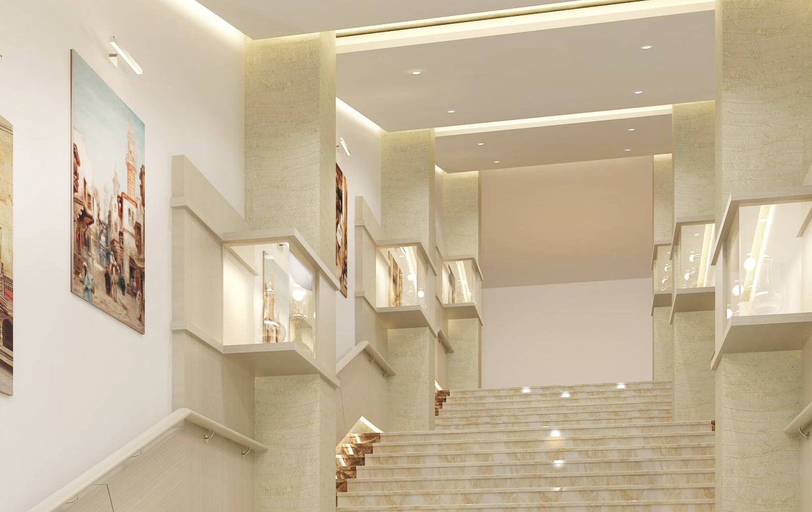
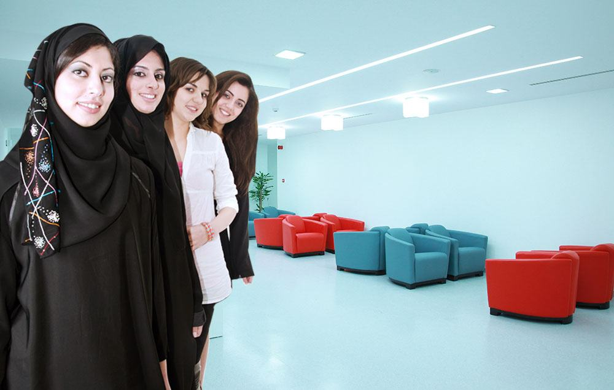
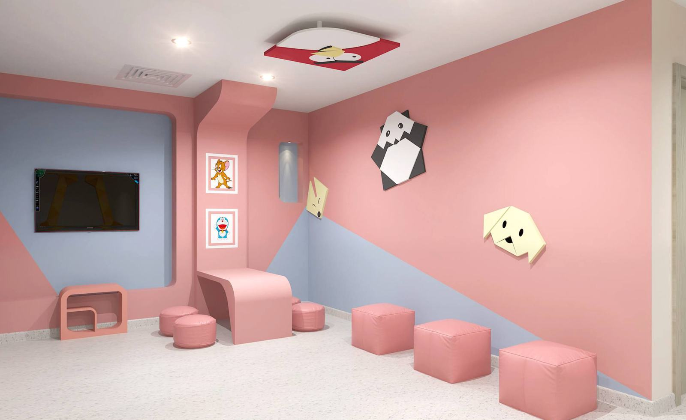
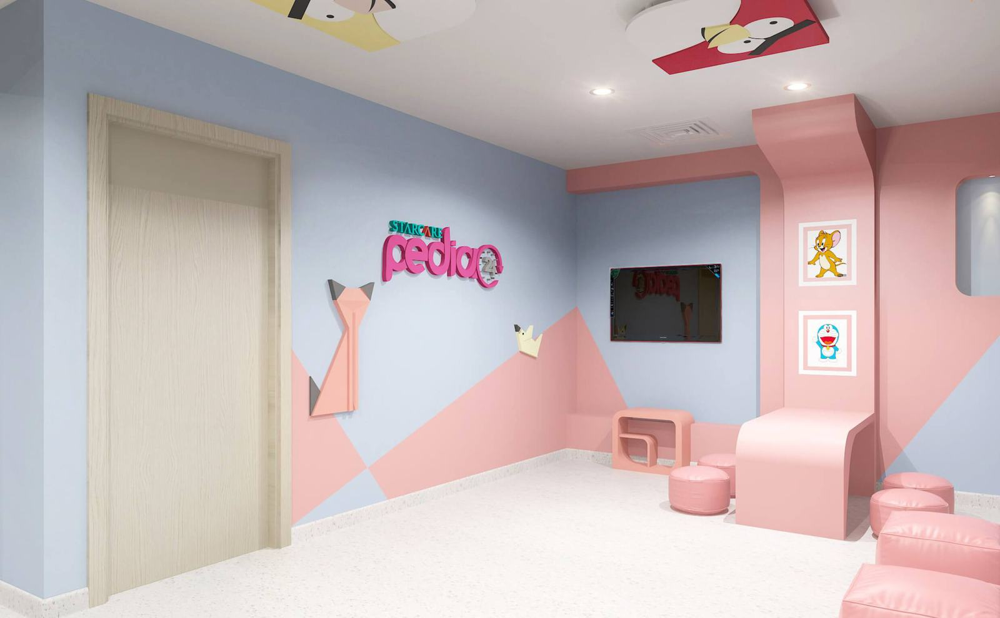

Specialities
All specialities
35 departments across the Starcare hospitals and medical centres, as listed on each branch website.
35 specialities
Anaesthesiology & Pain Management
The Department of Anaesthesiology offers consultation in the comprehensive management of anesthetic care for surgical, diagnostic, and therapeutic procedures, and provides pre-and post-operative care including pain therapy and critical care. Our anaesthesiologist’s first concern is always patient safety.
ExploreAyurveda
Ayurveda is offered at Starcare Barka.
Explore
Render: Starcare facilities galleryBariatric & Laparoscopic Surgery
When it is decided for a surgery, it is also very important to decide where to do it. Starcare offers highly experienced & skilled team of surgeons equipped with latest diagnostic and surgical technology, loving and caring nursing support, pleasant and nurturing environment for the fastest recovery of the patient.
Explore
Photo: Starcare SeebCardiology
The Cardiology department at Starcare hospital integrates a whole array of non-invasive cardiology services supported by diagnostic facilities like TMT, echocardiogram. The department offers lifestyle clinics and wellness programs detailing exercise patterns and comprehensive cardiac checkups.
Explore Photo: Starcare campaign image
Photo: Starcare campaign image Dentistry & Implantology
Proper functioning of teeth is essential for good health and well-being. The smile also reveals the confidence and personality of an individual.
Explore Photo: Starcare campaign image
Photo: Starcare campaign image Dermatology & Cosmetology
Skin is the largest organ in the human body. Skin problems affect people of all age groups.
Explore Photo: Starcare campaign image
Photo: Starcare campaign image Diabetology
Starcare Hospital runs an exclusive clinic for Diabetes, Endocrine and Metabolic disorders. The department is committed to early diagnosis and evidence based management of type 1 & type 2 diabetes, gestational diabetes and long term and short term complications arising from the various kinds of diabetes.
ExploreDiet & Nutrition
Starcare Hospital offers comprehensive nutrition counselling for people with medical conditions requiring changes in diet and eating habits. Our licensed dietitians work with the physician to create individualized plans to help the patients meet short-term and long-term goals for improved health.
ExploreENT
The Department of Ear Nose and Throat (ENT) at Starcare Hospital is a state-of-the-art department with the most modern ENT workstation (first of its kind in Oman). The Department offers comprehensive care of all the ENT & Head and Neck diseases under one roof.
ExploreEndocrinology
Endocrinology is offered at Starcare Seeb.
ExploreFamily Medicine
Family medicine is a medical specialty devoted to comprehensive health care for people of all ages. A family practitioner is a primary care doctor who provides continuing and comprehensive health care for the individual and family across all ages, genders, diseases, and parts of the body.
ExploreGastroenterology
Gastroenterology is a medical specialty that focuses on the digestive system / oesophagus, stomach, small intestines , colon and rectum, and also includes diseases of the liver and associated organs like gall bladder, biliary tree and pancreas.The Gastroenterology department at Starcare Hospital is fully equipped with the latest technology facilities and headed by internationally qualified doctors & best among nursing care. The Department offers full service including laboratory testing, Ultrasound Scan, CT scan and Endoscopy Services.
ExploreGeneral & Laparoscopic Surgery
When it is decided for a surgery, it is also very important to decide where to do it. Starcare offers highly experienced & skilled team of surgeons equipped with latest diagnostic and surgical technology, loving and caring nursing support, pleasant and nurturing environment for the fastest recovery of the patient.
ExploreHaematology
Haematology is offered at Starcare Bousher, Seeb.
ExplorePhoto: Starcare campaign image Internal Medicine
Internal Medicine is the medical specialty dealing with the prevention, diagnosis and treatment of general adult illness. People specializing in internal medicine are especially skilled in the management of patients who have multi-system illness.
Explore Photo: Starcare campaign image
Photo: Starcare campaign image Neurology
Department of Neurology at Starcare Hospital addresses various disorders pertaining to the nervous system and offers comprehensive consultative services, diagnostic testing and treatment for a broad spectrum of neurological conditions. At Starcare, the patients benefit from the wide experience of our in-house and visiting Neurologists who in turn are supported with radiologists, physiotherapists, neurosurgeons and other specialists.
ExploreObstetrics & Gynaecology
The Obstetrics & Gynaecology Department at Starcare Hospital is equipped with most ultra-modern equipment including Hill Rom Multifunction Birthing Bed providing sophisticated labour room facility. The Operation theatres are as per American Architect Institute Standards and the inpatient rooms are star rated suite rooms with centralized medical and monitoring system.
ExploreOphthalmology
Starcare Ophthalmology Department provides the best possible eye care to its patients and is dedicated to providing eye care ranging from routine eye examinations to complex surgical procedures. The department also performs refractions, prescribes corrective lenses and performs other tests as required to help maintain good vision.
ExplorePhoto: Starcare campaign image Oral & Maxillofacial Surgery
Oral & Maxillofacial Surgery is offered at Starcare Barka, Seeb.
Explore Photo: Starcare campaign image
Photo: Starcare campaign image Orthopaedic, Spine Care & Trauma Care
The Orthopaedic Department at Starcare Hospital is well equipped and caters to all the bone and joint problems. The Department provides advanced diagnostic and treatment facilities in the specialized fields of sports medicine, complete trauma surgery, spinal and paediatric surgery.
Explore
Render: Starcare facilities galleryPaediatric Cardiology
Children who have congenital and acquired heart disease need complex, multifaceted care for continued survival and better quality of life. Starcare Paediatric Cardiology department educates you and your child about your heart (cardiac) anatomy, future health and potential future heart conditions.
Explore
Render: Starcare facilities galleryPaediatric Surgery
The health and wellbeing of the children is most important to the family and the society at large. At Starcare, children are a priority and we aim to please them in the best possible way in stressful situations.
Explore Render: Starcare facilities gallery
Render: Starcare facilities gallery Pathology
Medical laboratory tests play an important role in detection, diagnosis and treatment of diseases in patients. The department of Laboratory Medicine at Starcare covers the complete range of pathology testing services.
ExplorePediatric Orthopedics
Pediatric Orthopedics is offered at Starcare Mabela.
ExplorePediatrics & Neonatology
The Paediatric Department is well equipped to provide the various diagnostic evaluations and treatments, every attempt is made to deliver care in a manner that fosters optimal development of the newborn infant as well as incorporates the family into care plan initiatives and is well supported by paediatric specialist consultants. Care is delivered by a dedicated staff of neonatal nurses in collaboration with subspecialty-trained doctors and neonatologists.
ExplorePhoto: Starcare campaign image Physiotherapy & Rehabilitation
The Starcare Hospital physiotherapy department is well equipped and aims to rehabilitate and improve the movement disorders in people by using evidence-based, natural methods such as exercise, motivation, adapted equipment, education and advocacy. Our Physiotherapists are well experienced in medical science subjects such as anatomy, neuroscience and physiology to develop skills and attitudes necessary for health education, prevention, diagnosis, treatment and rehabilitation of patients with physical disorders and disabilities.
ExplorePhoto: Starcare campaign image Plastic, Cosmetic & Reconstructive Surgery
Starcare Hospital offers the very best of Plastic, Reconstructive and Cosmetic Surgery by professionals trained in the latest techniques. We treat patients with congenital and traumatic deformities of the face and neck in addition to providing cosmetic surgery of these areas.
ExplorePsychiatry & Behavioural Medicine
Psychiatry is the medical specialty devoted to the study and treatment of mental disorders. Starcare provides outpatient care for this usually neglected group of patients and is among the handful of private facilities in the Sultanate offering this service.
ExplorePulmonology
Pulmonology is offered at Starcare Barka, Seeb.
Explore Render: Starcare facilities gallery
Render: Starcare facilities gallery Radiology & Imaging
The Department of Radiology at Starcare Hospital aims to provide professional and quality diagnostic and consultative services to referring physicians and patients. The department provides a wide range of diagnostic testing services utilizing state-of-the-art equipment ranging from computed radiology (CR) to multislice CT scan, which is an assurance to the patients of receiving one of the best imaging services.
ExploreRheumatology
Rheumatologist specialises in the diagnosis and nonsurgical treatment of diseases involving muscles, joints, soft tissues and related connective tissue disorders. Rheumatic conditions can be effectively managed with early diagnosis and targeted treatment.
ExplorePhoto: Starcare campaign image Sports Medicine
Starcare offers specialized treatment of Orthopaedic problems and athletic injuries under the guidance of internationally acclaimed faculties supported by latest technologies and a team of Sports Surgeons, Physicians, Physiotherapist and Dietitian to guide the patient’s trough rehabilitation and ensure speedy recovery. Our experts have provided advice and treatment to professional players and athletes in the West, India and GCC region.
Explore Render: Starcare facilities gallery
Render: Starcare facilities gallery Urgent Care
The emergency department at Starcare hospital is manned by ACLS certified doctors and nursing staff who are capable of managing all types of emergencies. The department follows internationally accepted ER protocols.
ExploreUrology
Starcare Hospital Urology Department devotes itself to helping with rapid, accurate diagnosis and immediate, effective treatment for a wide range of urological and genital problems. The department is staffed by consultants with specialized training in Laproscopic surgeries, Lithotripsy and management of common Urological problems.
ExploreVascular Surgery
Vascular surgery refers to open surgeries and minimally-invasive procedures that treat a range of blood vessel problems. These include aortic aneurysms, peripheral artery disease, carotid artery disease, and chronic venous insufficiency.
ExploreBook an appointment